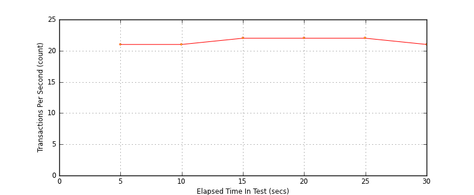
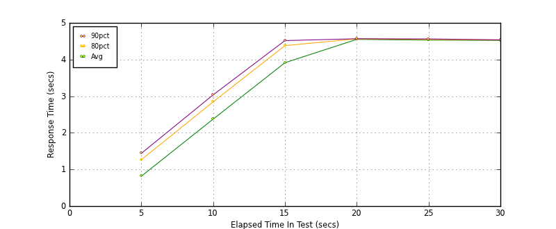
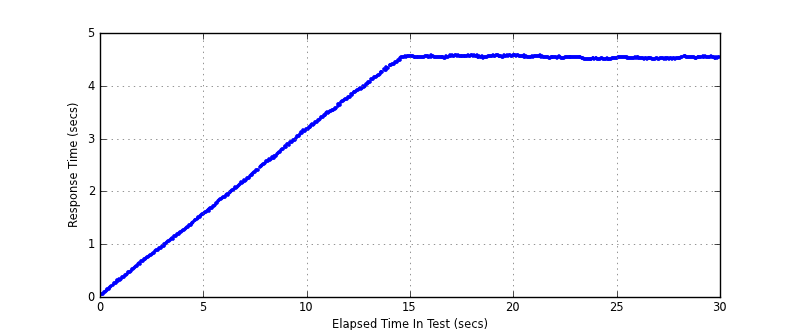

Performance Results Report
Summary
transactions: 756
errors: 0
run time: 30 secs
rampup: 10 secs
test start: 2014-01-15 19:29:02
test finish: 2014-01-15 19:29:32
time-series interval: 5 secs
workload configuration:
| group name | threads | script name |
|---|
| user_group-1 | 100 | read_user.py |
All Transactions
Transaction Response Summary (secs)
| count | min | avg | 80pct | 90pct | 95pct | max | stdev |
|---|
| 756 | 0.044 | 3.460 | 4.540 | 4.554 | 4.564 | 4.577 | 1.439 |
Interval Details (secs)
| interval | count | rate | min | avg | 80pct | 90pct | 95pct | max | stdev |
|---|
| 1 | 109 | 21.80 | 0.044 | 0.816 | 1.265 | 1.440 | 1.515 | 1.590 | 0.448 |
| 2 | 107 | 21.40 | 1.598 | 2.373 | 2.845 | 3.036 | 3.110 | 3.176 | 0.465 |
| 3 | 110 | 22.00 | 3.179 | 3.914 | 4.380 | 4.518 | 4.539 | 4.562 | 0.422 |
| 4 | 110 | 22.00 | 4.526 | 4.550 | 4.564 | 4.568 | 4.570 | 4.577 | 0.013 |
| 5 | 111 | 22.20 | 4.492 | 4.530 | 4.546 | 4.563 | 4.565 | 4.575 | 0.021 |
| 6 | 109 | 21.80 | 4.489 | 4.524 | 4.535 | 4.539 | 4.547 | 4.553 | 0.013 |
Graphs
Response Time: 5 sec time-series
Response Time: raw data (all points)
Throughput: 5 sec time-series

Custom Timer: get_tweets
Timer Summary (secs)
| count | min | avg | 80pct | 90pct | 95pct | max | stdev |
|---|
| 656 | 0.044 | 3.460 | 4.539 | 4.554 | 4.564 | 4.576 | 1.439 |
Interval Details (secs)
| interval | count | rate | min | avg | 80pct | 90pct | 95pct | max | stdev |
|---|
| 1 | 109 | 21.80 | 0.044 | 0.816 | 1.265 | 1.440 | 1.514 | 1.590 | 0.448 |
| 2 | 107 | 21.40 | 1.598 | 2.373 | 2.845 | 3.036 | 3.109 | 3.176 | 0.465 |
| 3 | 110 | 22.00 | 3.179 | 3.913 | 4.380 | 4.517 | 4.539 | 4.562 | 0.422 |
| 4 | 110 | 22.00 | 4.526 | 4.550 | 4.564 | 4.568 | 4.569 | 4.576 | 0.013 |
| 5 | 111 | 22.20 | 4.491 | 4.530 | 4.546 | 4.563 | 4.565 | 4.575 | 0.021 |
| 6 | 109 | 21.80 | 4.489 | 4.523 | 4.535 | 4.539 | 4.547 | 4.553 | 0.013 |
Graphs
Response Time: 5 sec time-series

Response Time: raw data (all points)

Throughput: 5 sec time-series